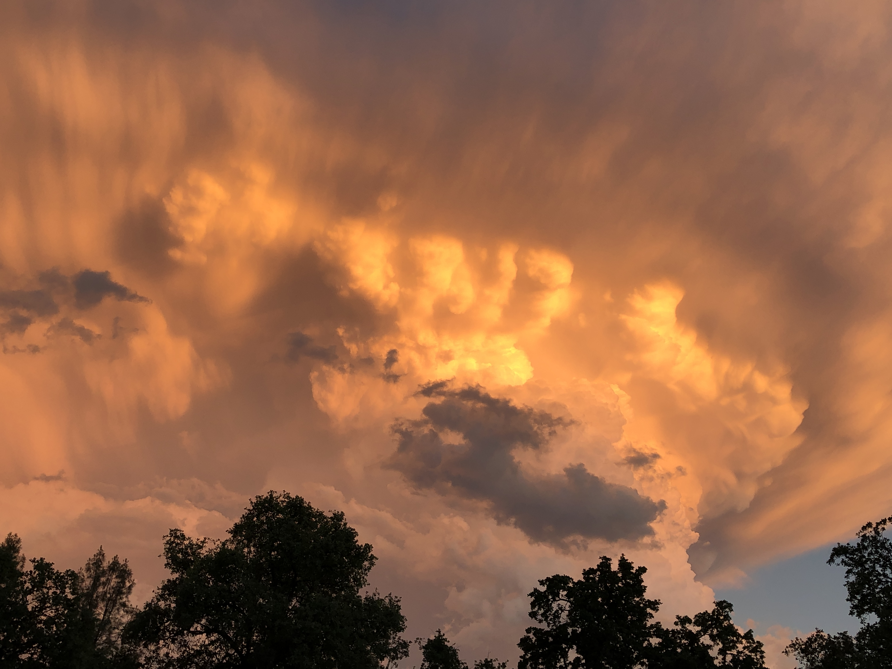

Page 1
Page 1
The Storm
An intriguing experience

This was taken in the north part of Redding, California from my friend Luke's house.
He graduated from Shasta College in May of 2019 and part of the ceremony got cancelled due to this huge storm.
It was raining hail and thunder which resulted in a beautiful picture with the sun shining on the great clouds
as it was setting.
Table Of Contents
Back
Next